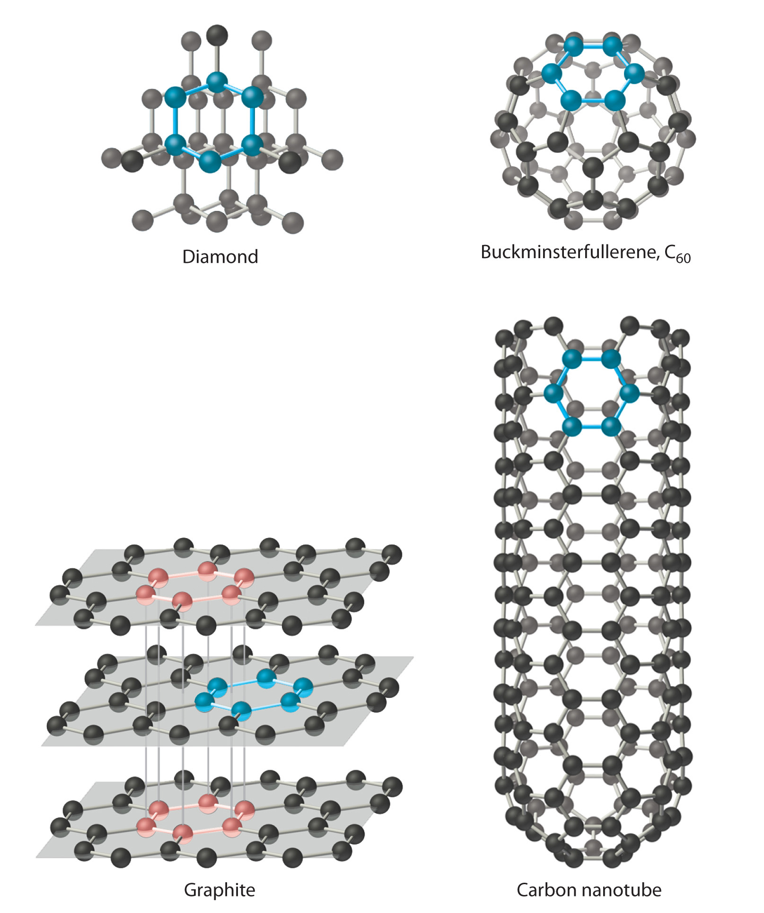

Periodic trends in properties such as atomic size and ionic size, ionization energy, electron affinity, and electronegativity illustrate the strong connection between the chemical properties and the reactivity of the elements and their positions in the periodic table. In this section, we explore that connection by focusing on two periodic properties that correlate strongly with the chemical behavior of the elements: valence electron configurations and Mulliken electronegativities.
We have said that elements with the same valence electron configuration (i.e., elements in the same column of the periodic table) often have similar chemistry. This correlation is particularly evident for the elements of groups 1, 2, 3, 13, 16, 17, and 18. The intervening families in the p block (groups 14 and 15) straddle the diagonal line separating metals from nonmetals. The lightest members of these two families are nonmetals, so they react differently compared to the heaviest members, which are metals. We begin our survey with the alkali metals (group 1), which contain only a single electron outside a noble gas electron configuration, and end with the noble gases (group 18), which have full valence electron shells.
The elements of group 1 are called the alkali metals. Alkali (from the Arabic al-qili, meaning “ashes of the saltwort plant from salt marshes”) was a general term for substances derived from wood ashes, all of which possessed a bitter taste and were able to neutralize acids. Although oxides of both group 1 and group 2 elements were obtained from wood ashes, the alkali metals had lower melting points.
Potassium and sodium were first isolated in 1807 by the British chemist Sir Humphry Davy (1778–1829) by passing an electrical current through molten samples of potash (K2CO3) and soda ash (Na2CO3). The potassium burst into flames as soon as it was produced because it reacts readily with oxygen at the higher temperature. However, the group 1 elements, like the group 2 elements, become less reactive with air or water as their atomic number decreases. The heaviest element (francium) was not discovered until 1939. It is so radioactive that studying its chemistry is very difficult.
The alkali metals have ns1 valence electron configurations and the lowest electronegativity of any group; hence they are often referred to as being electropositive elements. As a result, they have a strong tendency to lose their single valence electron to form compounds in the +1 oxidation state, producing the EX monohalides and the E2O oxides.
Because they are so reactive, pure group 1 elements are powerful reducing agents that are used in lithium batteries and cardiac pacemakers. Sodium salts such as common table salt (NaCl), baking soda (NaHCO3), soda ash (Na2CO3), and caustic soda (NaOH) are important industrial chemicals. Other compounds of the alkali metals are important in biology. For example, because potassium is required for plant growth, its compounds are used in fertilizers, and lithium salts are used to treat manic-depressive, or bipolar, disorders.

Potassium burning. A piece of potassium dropped in a beaker of water will burn as it skips across the top of the water.
The elements of group 2 are collectively referred to as the alkaline earth metals, a name that originated in the Middle Ages, when an “earth” was defined as a substance that did not melt and was not transformed by fire. Alkalis that did not melt easily were called “alkaline earths.”
Recall that the trend in most groups is for the lightest member to have properties that are quite different from those of the heavier members. Consistent with this trend, the properties of the lightest element—in this case, beryllium—tend to be different from those of its heavier congeners, the other members of the group. Beryllium is relatively unreactive but forms many covalent compounds, whereas the other group members are much more reactive metals and form ionic compounds. As is the case with the alkali metals, the heaviest element, radium, is highly radioactive, making its size difficult to measure. Radium was discovered in 1902 by Marie Curie (1867–1934; Nobel Prize in Chemistry 1903 and Nobel Prize in Chemistry 1911), who, with her husband, Pierre, isolated 120 mg of radium chloride from tons of residues from uranium mining. (For more information about radioactivity, see Chapter 1 "Introduction to Chemistry", Section 1.5 "The Atom".)
All the alkaline earth metals have ns2 valence electron configurations, and all have electronegativities less than 1.6. This means that they behave chemically as metals (although beryllium compounds are covalent) and lose the two valence electrons to form compounds in the +2 oxidation state. Examples include the dihalides (EX2) and the oxides (EO).
Compounds of the group 2 elements have been commercially important since Egyptian and Roman times, when blocks of limestone or marble, which are both CaCO3, were used as building materials, and gypsum (CaSO4·2 H2O) or lime (CaO) was used as mortar. Calcium sulfate is still used in Portland cement and plaster of Paris. Magnesium and beryllium form lightweight, high-strength alloys that are used in the aerospace, automotive, and other high-tech industries. As you learned in Chapter 6 "The Structure of Atoms", one of the most impressive uses of these elements is in fireworks; strontium and barium salts, for example, give red or green colors, respectively. Except for beryllium, which is highly toxic, the group 2 elements are also important biologically. Bone is largely hydroxyapatite [Ca5(PO4)3OH], mollusk shells are calcium carbonate, magnesium is part of the chlorophyll molecule in green plants, and calcium is important in hormonal and nerve signal transmission. Because BaSO4 is so insoluble, it is used in “barium milk shakes” to obtain x-rays of the gastrointestinal tract.
Of the group 13 elements, only the lightest, boron, lies on the diagonal line that separates nonmetals and metals. Thus boron is a semimetal, whereas the rest of the group 13 elements are metals. Elemental boron has an unusual structure consisting of B12 icosahedra covalently bonded to one another; the other elements are typical metallic solids.
No group 13 elements were known in ancient times, not because they are scarce—Al is the third most abundant element in Earth’s crust—but because they are highly reactive and form extremely stable compounds with oxygen. To isolate the pure elements, potent reducing agents and careful handling were needed.
The elements of group 13 have ns2np1 valence electron configurations. Consequently, two oxidation states are important: +3, from losing three valence electrons to give the closed-shell electron configuration of the preceding noble gas; and +1, from losing the single electron in the np subshell. Because these elements have small, negative electron affinities (boron’s is only −27.0 kJ/mol), they are unlikely to acquire five electrons to reach the next noble gas configuration. In fact, the chemistry of these elements is almost exclusively characterized by +3. Only the heaviest element (Tl) has extensive chemistry in the +1 oxidation state. It loses the single 6p electron to produce TlX monohalides and the oxide Tl2O.
In the 19th century, aluminum was considered a precious metal. In fact, it was considered so precious that aluminum knives and forks were reserved for the French Emperor Louis Napoleon III, while his less important guests had to be content with gold or silver cutlery. Because of the metal’s rarity the dedication of the Washington Monument in 1885 was celebrated by placing a 100 oz chunk of pure aluminum at the top. In contrast, today aluminum is used on an enormous scale in aircraft, automobile engines, armor, cookware, and beverage containers. It is valued for its combination of low density, high strength, and corrosion resistance. Aluminum is also found in compounds that are the active ingredients in most antiperspirant deodorants.
Compounds of boron, such as one form of BN, are hard, have a high melting point, and are resistant to corrosion. They are particularly useful in materials that are exposed to extreme conditions, such as aircraft turbines, brake linings, and polishing compounds. Boron is also a major component of many kinds of glasses, and sodium perborate [Na2B2O4(OH)4] is the active ingredient in many so-called color-safe laundry bleaches.
Gallium, indium, and thallium are less widely used, but gallium arsenide is the red light-emitting diode (LED) in digital readouts in electronics, and MgGa2O4 produces the green light emitted in many xerographic machines. Compounds of thallium(I) are extremely toxic. Although Tl2SO4 is an excellent rat or ant poison, it is so toxic to humans that it is no longer used for this purpose.
The group 14 elements straddle the diagonal line that divides nonmetals from metals. Of the elements in this group, carbon is a nonmetal, silicon and germanium are semimetals, and tin and lead are metals. As a result of this diversity, the structures of the pure elements vary greatly.
The ns2np2 valence electron configurations of group 14 gives rise to three oxidation states: −4, in which four electrons are added to achieve the closed-shell electron configuration of the next noble gas; +4, in which all four valence electrons are lost to give the closed-shell electron configuration of the preceding noble gas; and +2, in which the loss of two np2 electrons gives a filled ns2 subshell.
The electronegativity of carbon is only 2.5, placing it in the middle of the electronegativity range, so carbon forms covalent compounds with a wide variety of elements and is the basis of all organic compounds. All of the group 14 elements form compounds in the +4 oxidation state, so all of them are able to form dioxides (from CO2 to PbO2) and tetrachlorides (CCl4 and PbCl4). Only the two metallic elements, Sn and Pb, form an extensive series of compounds in the +2 oxidation state. Tin salts are sprayed onto glass to make an electrically conductive coating, and then the glass is used in the manufacture of frost-free windshields. Lead sulfate is formed when your car battery discharges.
Carbon has at least four allotropes (forms or crystal structures) that are stable at room temperature: graphite; diamond; a group of related cage structures called fullerenesOne of at least four allotropes of carbon comprising a group of related cage structures. (such as C60); and nanotubesOne of at least four allotropes of carbon that are cylinders of carbon atoms and are intermediate in structure between graphite and the fullerenes., which are cylinders of carbon atoms (Figure 7.18 "Four Allotropes of Carbon"). Graphite consists of extended planes of covalently bonded hexagonal rings. Because the planes are not linked by covalent bonds, they can slide across one another easily. This makes graphite ideally suited as a lubricant and as the “lead” in lead pencils. Graphite also provides the black color in inks and tires, and graphite fibers are used in high-tech items such as golf clubs, tennis rackets, airplanes, and sailboats because of their lightweight, strength, and stiffness.
Figure 7.18 Four Allotropes of Carbon
Diamond consists of a rigid three-dimensional array of carbon atoms, making it one of the hardest substances known. In contrast, graphite forms from extended planes of covalently bonded hexagonal rings of carbon atoms that can slide across one another easily. Fullerenes are spherical or ellipsoidal molecules with six- and five-membered rings of carbon atoms, and nanotubes are sheets of graphite rolled up into a cylinder.
In contrast to the layered structure of graphite, each carbon atom in diamond is bonded to four others to form a rigid three-dimensional array, making diamond one of the hardest substances known; consequently, it is used in industry as a cutting tool. Fullerenes, on the other hand, are spherical or ellipsoidal molecules with six- and five-membered rings of carbon atoms; they are volatile substances that dissolve in organic solvents. Fullerenes of extraterrestrial origin have been found in meteorites and have been discovered in a cloud of cosmic dust surrounding a distant star, which makes them the largest molecules ever seen in space. Carbon nanotubes, intermediate in structure between graphite and the fullerenes, can be described as sheets of graphite that have been rolled up into a cylinder or, alternatively, fullerene cages that have been stretched in one direction. Carbon nanotubes are being studied for use in the construction of molecular electronic devices and computers. For example, fabrics that are dipped in an ink of nanotubes and then pressed to thin out the coating are turned into batteries that maintain their flexibility. This creates “wearable electronics” and allows for the possibility of incorporating electronics into flexible surfaces. When applied to a t-shirt, for example, the t-shirt is converted into an “e-shirt.”
Silicon is the second must abundant element in Earth’s crust. Both silicon and germanium have strong, three-dimensional network structures similar to that of diamond. Sand is primarily SiO2, which is used commercially to make glass and prevent caking in food products. Complex compounds of silicon and oxygen with elements such as aluminum are used in detergents and talcum powder and as industrial catalysts. Because silicon-chip technology laid the foundation for the modern electronics industry, the San Jose region of California, where many of the most important advances in electronics and computers were developed, has been nicknamed “Silicon Valley.”
Elemental tin and lead are metallic solids. Tin is primarily used to make alloys such as bronze, which consists of tin and copper; solder, which is tin and lead; and pewter, which is tin, antimony, and copper.
In ancient times, lead was used for everything from pipes to cooking pots because it is easily hammered into different shapes. In fact, the term plumbing is derived from plumbum, the Latin name for lead. Lead compounds were used as pigments in paints, and tetraethyllead was an important antiknock agent in gasoline. Now, however, lead has been banned from many uses because of its toxicity, although it is still widely used in lead storage batteries for automobiles. In previous centuries, lead salts were frequently used as medicines. Evidence suggests, for example, that Beethoven’s death was caused by the application of various lead-containing medicines by his physician. Beethoven contracted pneumonia and was treated with lead salts, but in addition, he suffered from a serious liver ailment. His physician treated the ailment by repeatedly puncturing his abdominal cavity and then sealing the wound with a lead-laced poultice. It seems that the repeated doses of lead compounds contributed to Beethoven’s death.
The group 15 elements are called the pnicogensThe elements in group 15 of the periodic table.—from the Greek pnigein, meaning “to choke,” and genes, meaning “producing”—ostensibly because of the noxious fumes that many nitrogen and phosphorus compounds produce. This family has five stable elements; one isotope of bismuth (209Bi) is nonradioactive and is the heaviest nonradioactive isotope of any element. Once again, the lightest member of the family has unique properties. Although both nitrogen and phosphorus are nonmetals, nitrogen under standard conditions is a diatomic gas (N2), whereas phosphorus consists of three allotropes: white, a volatile, low-melting solid consisting of P4 tetrahedra; a red solid comprised of P8, P9, and P10 cages linked by P2 units; and black layers of corrugated phosphorus sheets. The next two elements, arsenic and antimony, are semimetals with extended three-dimensional network structures, and bismuth is a silvery metal with a pink tint.
All of the pnicogens have ns2np3 valence electron configurations, leading to three common oxidation states: −3, in which three electrons are added to give the closed-shell electron configuration of the next noble gas; +5, in which all five valence electrons are lost to give the closed-shell electron configuration of the preceding noble gas; and +3, in which only the three np electrons are lost to give a filled ns2 subshell. Because the electronegativity of nitrogen is similar to that of chlorine, nitrogen accepts electrons from most elements to form compounds in the −3 oxidation state (such as in NH3). Nitrogen has only positive oxidation states when combined with highly electronegative elements, such as oxygen and the halogens (e.g., HNO3, NF3). Although phosphorus and arsenic can combine with active metals and hydrogen to produce compounds in which they have a −3 oxidation state (PH3, for example), they typically attain oxidation states of +3 and +5 when combined with more electronegative elements, such as PCl3 and H3PO4. Antimony and bismuth are relatively unreactive metals, but form compounds with oxygen and the halogens in which their oxidation states are +3 and +5 (as in Bi2O3 and SbF5).
Although it is present in most biological molecules, nitrogen was the last pnicogen to be discovered. Nitrogen compounds such as ammonia, nitric acid, and their salts are used agriculturally in huge quantities; nitrates and nitrites are used as preservatives in meat products such as ham and bacon, and nitrogen is a component of nearly all explosives.
Phosphorus, too, is essential for life, and phosphate salts are used in fertilizers, toothpaste, and baking powder. One, phosphorus sulfide, P4S3, is used to ignite modern safety matches. Arsenic, in contrast, is toxic; its compounds are used as pesticides and poisons. Antimony and bismuth are primarily used in metal alloys, but a bismuth compound is the active ingredient in the popular antacid medication Pepto-Bismol.
The group 16 elements are often referred to as the chalcogensThe elements in group 16 of the periodic table.—from the Greek chalk, meaning “copper,” and genes, meaning “producing”—because the most ancient copper ore, copper sulfide, is also rich in two other group 16 elements: selenium and tellurium. Once again, the lightest member of the family has unique properties. In its most common pure form, oxygen is a diatomic gas (O2), whereas sulfur is a volatile solid with S8 rings, selenium and tellurium are gray or silver solids that have chains of atoms, and polonium is a silvery metal with a regular array of atoms. Like astatine and radon, polonium is a highly radioactive metallic element.
All of the chalcogens have ns2np4 valence electron configurations. Their chemistry is dominated by three oxidation states: −2, in which two electrons are added to achieve the closed-shell electron configuration of the next noble gas; +6, in which all six valence electrons are lost to give the closed-shell electron configuration of the preceding noble gas; and +4, in which only the four np electrons are lost to give a filled ns2 subshell. Oxygen has the second highest electronegativity of any element; its chemistry is dominated by the −2 oxidation state (as in MgO and H2O). No compounds of oxygen in the +4 or +6 oxidation state are known. In contrast, sulfur can form compounds in all three oxidation states. Sulfur accepts electrons from less electronegative elements to give H2S and Na2S, for example, and it donates electrons to more electronegative elements to give compounds such as SO2, SO3, and SF6. Selenium and tellurium, near the diagonal line in the periodic table, behave similarly to sulfur but are somewhat more likely to be found in positive oxidation states.
Oxygen, the second most electronegative element in the periodic table, was not discovered until the late 18th century, even though it constitutes 20% of the atmosphere and is the most abundant element in Earth’s crust. Oxygen is essential for life; our metabolism is based on the oxidation of organic compounds by O2 to produce CO2 and H2O. Commercially, oxygen is used in the conversion of pig iron to steel, as the oxidant in oxyacetylene torches for cutting steel, as a fuel for the US space shuttle, and in hospital respirators.
Sulfur is the brimstone in “fire and brimstone” from ancient times. Partly as a result of its long history, it is employed in a wide variety of commercial products and processes. In fact, as you learned in Chapter 2 "Molecules, Ions, and Chemical Formulas", more sulfuric acid is produced worldwide than any other compound. Sulfur is used to cross-link the polymers in rubber in a process called vulcanization, which was discovered by Charles Goodyear in the 1830s and commercialized by Benjamin Goodrich in the 1870s. Vulcanization gives rubber its unique combination of strength, elasticity, and stability.
Selenium, the only other commercially important chalcogen, was discovered in 1817, and today it is widely used in light-sensitive applications. For example, photocopying, or xerography, from the Greek xèrós, meaning “dry,” and graphia, meaning “writing,” uses selenium films to transfer an image from one piece of paper to another, while compounds such as cadmium selenide are used to measure light in photographic light meters and automatic streetlights.
The term halogen, derived from the Greek háls, meaning “salt,” and genes, meaning “producing,” was first applied to chlorine because of its tendency to react with metals to form salts. All of the halogens have an ns2np5 valence electron configuration, and all but astatine are diatomic molecules in which the two halogen atoms share a pair of electrons. Diatomic F2 and Cl2 are pale yellow-green and pale green gases, respectively, while Br2 is a red liquid, and I2 is a purple solid. The halogens were not isolated until the 18th and 19th centuries.
Because of their relatively high electronegativities, the halogens are nonmetallic and generally react by gaining one electron per atom to attain a noble gas electron configuration and an oxidation state of −1. Halides are produced according to the following equation, in which X denotes a halogen:
Equation 7.16
2 E + nX2 → 2 EXnIf the element E has a low electronegativity (as does Na), the product is typically an ionic halide (NaCl). If the element E is highly electronegative (as P is), the product is typically a covalent halide (PCl5). Ionic halides tend to be nonvolatile substances with high melting points, whereas covalent halides tend to be volatile substances with low melting points. Fluorine is the most reactive of the halogens, and iodine the least, which is consistent with their relative electronegativities (Figure 7.15 "Pauling Electronegativity Values of the ").As we shall see in subsequent chapters, however, factors such as bond strengths are also important in dictating the reactivities of these elements. In fact, fluorine reacts with nearly all elements at room temperature. Under more extreme conditions, it combines with all elements except helium, neon, and argon.
The halogens react with hydrogen to form the hydrogen halides (HX):
Equation 7.17
H2(g) + X2(g,l,s) → 2 HX(g)Fluorine is so reactive that any substance containing hydrogen, including coal, wood, and even water, will burst into flames if it comes into contact with pure F2.
Because it is the most electronegative element known, fluorine never has a positive oxidation state in any compound. In contrast, the other halogens (Cl, Br, I) form compounds in which their oxidation states are +1, +3, +5, and +7, as in the oxoanions, XOn−, where n = 1–4. Because oxygen has the second highest electronegativity of any element, it stabilizes the positive oxidation states of the halogens in these ions.
All of the halogens except astatine (which is radioactive) are commercially important. NaCl in salt water is purified for use as table salt. Chlorine and hypochlorite (OCl−) salts are used to sanitize public water supplies, swimming pools, and wastewater, and hypochlorite salts are also used as bleaches because they oxidize colored organic molecules. Organochlorine compounds are used as drugs and pesticides. Fluoride (usually in the form of NaF) is added to many municipal water supplies to help prevent tooth decay, and bromine (in AgBr) is a component of the light-sensitive coating on photographic film. Because iodine is essential to life—it is a key component of the hormone produced by the thyroid gland—small amounts of KI are added to table salt to produce “iodized salt,” which prevents thyroid hormone deficiencies.
The noble gases are helium, neon, argon, krypton, xenon, and radon. All have filled valence electron configurations and therefore are unreactive elements found in nature as monatomic gases. The noble gases were long referred to as either “rare gases” or “inert gases,” but they are neither rare nor inert. Argon constitutes about 1% of the atmosphere, which also contains small amounts of the lighter group 18 elements, and helium is found in large amounts in many natural gas deposits. The group’s perceived “rarity” stems in part from the fact that the noble gases were the last major family of elements to be discovered.
The noble gases have EA ≥ 0, so they do not form compounds in which they have negative oxidation states. Because ionization energies decrease down the column, the only noble gases that form compounds in which they have positive oxidation states are Kr, Xe, and Rn. Of these three elements, only xenon forms an extensive series of compounds. The chemistry of radon is severely limited by its extreme radioactivity, and the chemistry of krypton is limited by its high ionization energy (1350.8 kJ/mol versus 1170.4 kJ/mol for xenon). In essentially all its compounds, xenon is bonded to highly electronegative atoms such as fluorine or oxygen. In fact, the only significant reaction of xenon is with elemental fluorine, which can give XeF2, XeF4, or XeF6. Oxides such as XeO3 are produced when xenon fluorides react with water, and oxidation with ozone produces the perxenate ion [XeO64−], in which xenon acquires a +8 oxidation state by formally donating all eight of its valence electrons to the more electronegative oxygen atoms. In all of its stable compounds, xenon has a positive, even-numbered oxidation state: +2, +4, +6, or +8. The actual stability of these compounds varies greatly. For example, XeO3 is a shock-sensitive, white crystalline solid with explosive power comparable to that of TNT (trinitrotoluene), whereas another compound, Na2XeF8, is stable up to 300°C.
Although none of the noble gas compounds is commercially significant, the elements themselves have important applications. For example, argon is used in incandescent light bulbs, where it provides an inert atmosphere that protects the tungsten filament from oxidation, and in compact fluorescent light bulbs (CFLs). It is also used in arc welding and in the manufacture of reactive elements, such as titanium, or of ultrapure products, such as the silicon used by the electronics industry. Helium, with a boiling point of only 4.2 K, is used as a liquid for studying the properties of substances at very low temperatures. It is also combined in an 80:20 mixture with oxygen used by scuba divers, rather than compressed air, when they descend to great depths. Because helium is less soluble in water than N2—a component of compressed air—replacing N2 with He prevents the formation of bubbles in blood vessels, a condition called “the bends” that can occur during rapid ascents. Neon is familiar to all of us as the gas responsible for the red glow in neon lights.

As expected for elements with the same valence electron configuration, the elements in each column of the d block have vertical similarities in chemical behavior. In contrast to the s- and p-block elements, however, elements in the d block also display strong horizontal similarities. The horizontal trends compete with the vertical trends. In further contrast to the p-block elements, which tend to have stable oxidation states that are separated by two electrons, the transition metalsAny element in groups 3–12 in the periodic table. All of the transition elements are metals. have multiple oxidation states that are separated by only one electron.
The p-block elements form stable compounds in oxidation states that tend to be separated by two electrons, whereas the transition metals have multiple oxidation states that are separated by one electron.
The group 6 elements, chromium, molybdenum, and tungsten, illustrate the competition that occurs between these horizontal and vertical trends. For example, the maximum oxidation state for all elements in group 6 is +6, achieved by losing all six valence electrons (recall that Cr has a 4s13d5 valence electron configuration), yet nearly all the elements in the first row of the transition metals, including chromium, form compounds with the dication M2+, and many also form the trication M3+. As a result, the transition metals in group 6 have very different tendencies to achieve their maximum oxidation state. The most common oxidation state for chromium is +3, whereas the most common oxidation state for molybdenum and tungsten is +6.
The d-block elements display both strong vertical and horizontal similarities.
Groups 3 (scandium, lanthanum, actinium), 11 (copper, silver, gold), and 12 (zinc, cadmium, mercury) are the only transition metal groups in which the oxidation state predicted by the valence electron configuration dominates the chemistry of the group. The elements of group 3 have three valence electrons outside an inner closed shell, so their chemistry is almost exclusively that of the M3+ ions produced by losing all three valence electrons. The elements of group 11 have 11 valence electrons in an ns1(n − 1)d10 valence electron configuration, and so all three lose a single electron to form the monocation M+ with a closed (n − 1)d10 electron configuration. Consequently, compounds of Cu+, Ag+, and Au+ are very common, although there is also a great deal of chemistry involving Cu2+. Similarly, the elements of group 12 all have an ns2(n − 1)d10 valence electron configuration, so they lose two electrons to form M2+ ions with an (n − 1)d10 electron configuration; indeed, the most important ions for these elements are Zn2+, Cd2+, and Hg2+. Mercury, however, also forms the dimeric mercurous ion (Hg22+) because of a subtle balance between the energies needed to remove additional electrons and the energy released when bonds are formed. The +3 oxidation state is the most important for the lanthanidesAny of the 14 elements between (cerium) and (lutetium). and for most of the actinidesAny of the 14 elements between (thorium) and (lawrencium)..
Based on the following information, determine the most likely identities for elements D and E.
Given: physical and chemical properties of two elements
Asked for: identities
Strategy:
A Based on the conductivity of the elements, determine whether each is a metal, a nonmetal, or a semimetal. Confirm your prediction from its physical appearance.
B From the compounds each element forms, determine its common oxidation states.
C If the element is a nonmetal, it must be located in the p block of the periodic table. If a semimetal, it must lie along the diagonal line of semimetals from B to At. Transition metals can have two oxidation states separated by one electron.
D From your classification, the oxidation states of the element, and its physical appearance, deduce its identity.
Solution:
Exercise
Based on the following information, determine the most likely identities for elements G and J.
Answer:
The chemical families consist of elements that have the same valence electron configuration and tend to have similar chemistry. The alkali metals (group 1) have ns1 valence electron configurations and form M+ ions, while the alkaline earth metals (group 2) have ns2 valence electron configurations and form M2+ ions. Group 13 elements have ns2np1 valence electron configurations and have an overwhelming tendency to form compounds in the +3 oxidation state. Elements in group 14 have ns2np2 valence electron configurations but exhibit a variety of chemical behaviors because they range from a nonmetal (carbon) to metals (tin/lead). Carbon, the basis of organic compounds, has at least four allotropes with distinct structures: diamond, graphite, fullerenes, and carbon nanotubes. The pnicogens (group 15) all have ns2np3 valence electron configurations; they form compounds in oxidation states ranging from −3 to +5. The chalcogens (group 16) have ns2np4 valence electron configurations and react chemically by either gaining two electrons or by formally losing four or six electrons. The halogens (group 17) all have ns2np5 valence electron configurations and are diatomic molecules that tend to react chemically by accepting a single electron. The noble gases (group 18) are monatomic gases that are chemically quite unreactive due to the presence of a filled shell of electrons. The transition metals (groups 3–10) contain partially filled sets of d orbitals, and the lanthanides and the actinides are those groups in which f orbitals are being filled. These groups exhibit strong horizontal similarities in behavior. Many of the transition metals form M2+ ions, whereas the chemistry of the lanthanides and actinides is dominated by M3+ ions.
Of the group 1 elements, which would you expect to be the best reductant? Why? Would you expect boron to be a good reductant? Why or why not?
Classify each element as a metal, a nonmetal, or a semimetal: Hf, I, Tl, S, Si, He, Ti, Li, and Sb. Which would you expect to be good electrical conductors? Why?
Classify each element as a metal, a nonmetal, or a semimetal: Au, Bi, P, Kr, V, Na, and Po. Which would you expect to be good electrical insulators? Why?
Of the elements Kr, Xe, and Ar, why does only xenon form an extensive series of compounds? Would you expect Xe2+ to be a good oxidant? Why or why not?
Identify each statement about the halogens as either true or false and explain your reasoning.
Nitrogen forms compounds in the +5, +4, +3, +2, and −3 oxidation states, whereas Bi forms ions only in the +5 and +3 oxidation states. Propose an explanation for the differences in behavior.
Of the elements Mg, Al, O, P, and Ne, which would you expect to form covalent halides? Why? How do the melting points of covalent halides compare with those of ionic halides?
Of the elements Li, Ga, As, and Xe, would you expect to form ionic chlorides? Explain your reasoning. Which are usually more volatile—ionic or covalent halides? Why?
Predict the relationship between the oxidative strength of the oxoanions of bromine—BrOn− (n = 1–4)—and the number of oxygen atoms present (n). Explain your reasoning.
The stability of the binary hydrides of the chalcogens decreases in the order H2O > H2S > H2Se > H2Te. Why?
Of the elements O, Al, H, and Cl, which will form a compound with nitrogen in a positive oxidation state? Write a reasonable chemical formula for an example of a binary compound with each element.
How do you explain the differences in chemistry observed for the group 14 elements as you go down the column? Classify each group 14 element as a metal, a nonmetal, or a semimetal. Do you expect the group 14 elements to form covalent or ionic compounds? Explain your reasoning.
Why is the chemistry of the group 13 elements less varied than the chemistry of the group 15 elements? Would you expect the chemistry of the group 13 elements to be more or less varied than that of the group 17 elements? Explain your reasoning.
If you needed to design a substitute for BaSO4, the barium milkshake used to examine the large and small intestine by x-rays, would BeSO4 be an inappropriate substitute? Explain your reasoning.
The alkali metals have an ns1 valence electron configuration, and consequently they tend to lose an electron to form ions with +1 charge. Based on their valence electron configuration, what other kind of ion can the alkali metals form? Explain your answer.
Would Mo or W be the more appropriate biological substitute for Cr? Explain your reasoning.
Nitrogen will have a positive oxidation state in its compounds with O and Cl, because both O and Cl are more electronegative than N. Reasonable formulas for binary compounds are: N2O5 or N2O3 and NCl3.
Write a balanced equation for formation of XeO3 from elemental Xe and O2. What is the oxidation state of Xe in XeO3? Would you expect Ar to undergo an analogous reaction? Why or why not?
Which of the p-block elements exhibit the greatest variation in oxidation states? Why? Based on their valence electron configurations, identify these oxidation states.
Based on its valence electron configuration, what are the three common oxidation states of selenium? In a binary compound, what atoms bonded to Se will stabilize the highest oxidation state? the lowest oxidation state?
Would you expect sulfur to be readily oxidized by HCl? Why or why not? Would you expect phosphorus to be readily oxidized by sulfur? Why or why not?
What are the most common oxidation states for the pnicogens? What factors determine the relative stabilities of these oxidation states for the lighter and the heavier pnicogens? What is likely to be the most common oxidation state for phosphorus and arsenic? Why?
Of the compounds NF3, NCl3, and NI3, which would be the least stable? Explain your answer. Of the ions BrO−, ClO−, or FO−, which would be the least stable? Explain your answer.
In an attempt to explore the chemistry of the superheavy element ununquadium, Z = 114, you isolated two distinct salts by exhaustively oxidizing metal samples with chlorine gas. These salts are found to have the formulas MCl2 and MCl4. What would be the name of ununquadium using Mendeleev’s eka-notation?
Would you expect the compound CCl2 to be stable? SnCl2? Why or why not?
A newly discovered element (Z) is a good conductor of electricity and reacts only slowly with oxygen. Reaction of 1 g of Z with oxygen under three different sets of conditions gives products with masses of 1.333 g, 1.668 g, and 1.501 g, respectively. To what family of elements does Z belong? What is the atomic mass of the element?
An unknown element (Z) is a dull, brittle powder that reacts with oxygen at high temperatures. Reaction of 0.665 gram of Z with oxygen under two different sets of conditions forms gaseous products with masses of 1.328 g and 1.660 g. To which family of elements does Z belong? What is the atomic mass of the element?
Why are the alkali metals such powerful reductants? Would you expect Li to be able to reduce H2? Would Li reduce V? Why or why not?
What do you predict to be the most common oxidation state for Au, Sc, Ag, and Zn? Give the valence electron configuration for each element in its most stable oxidation state.
Complete the following table.
| Mg | C | Ne | Fe | Br | |
|---|---|---|---|---|---|
| Valence Electron Configuration | |||||
| Common Oxidation States | |||||
| Oxidizing Strength |
Use the following information to identify elements T, X, D, and Z. Element T reacts with oxygen to form at least three compounds: TO, T2O3, and TO2. Element X reacts with oxygen to form XO2, but X is also known to form compounds in the +2 oxidation state. Element D forms D2O3, and element Z reacts vigorously and forms Z2O. Electrical conductivity measurements showed that element X exhibited electrical conductivity intermediate between metals and insulators, while elements T, D, and Z were good conductors of electricity. Element T is a hard, lustrous, silvery metal, element X is a blue-gray metal, element D is a light, silvery metal, and element Z is a soft, low-melting metal.
Predict whether Cs, F2, Al, and He will react with oxygen. If a reaction will occur, identify the products.
Predict whether K, Ar, O, and Al will react with Cl2. If a reaction will occur, identify the products.
Use the following information to identify elements X, T, and Z.
Adding a reactive metal to water in the presence of oxygen results in a fire. In the absence of oxygen, the addition of 551 mg of the metal to water produces 6.4 mg of hydrogen gas. Treatment of 2.00 g of this metal with 6.3 g of Br2 results in the formation of 3.86 g of an ionic solid. To which chemical family does this element belong? What is the identity of the element? Write and balance the chemical equation for the reaction of water with the metal to form hydrogen gas.
2 Xe + 3 O2 → 2 XeO3
The oxidation state of xenon in XeO3 is +6. No, Ar is much more difficult to oxidize than Xe.
The valence electron configuration of Se is [Ar]4s23d104p4. Its common oxidation states are: +6, due to loss of all six electrons in the 4s and 4p subshells; +4, due to loss of only the four 4p electrons; and −2, due to addition of two electrons to give an [Ar]4s23d104p6 electron configuration, which is isoelectronic with the following noble gas, Kr. The highest oxidation state (+6) will be stabilized by bonds to highly electronegative atoms such as F (SeF6) and O (SeO3), while the lowest oxidation state will be stabilized in covalent compounds by bonds to less electronegative atoms such as H (H2Se) or C [(CH3)2Se], or in ionic compounds with cations of electropositive metals (Na2Se).
All of the pnicogens have ns2np3 valence electron configurations. The pnicogens therefore tend to form compounds in three oxidation states: +5, due to loss of all five valence electrons; +3, due to loss of the three np3 electrons; and −3, due to addition of three electrons to give a closed shell electron configuration. Bonds to highly electronegative atoms such as F and O will stabilize the higher oxidation states, while bonds to less electronegative atoms such as H and C will stabilize the lowest oxidation state, as will formation of an ionic compound with the cations of electropositive metals. The most common oxidation state for phosphorus and arsenic is +5.
Uuq = eka-lead
The ratios of the masses of the element to the mass of oxygen give empirical formulas of ZO, Z2O3, and ZO2. The high electrical conductivity of the element immediately identifies it as a metal, and the existence of three oxides of the element with oxidation states separated by only one electron identifies it as a transition metal. If 1 g of Z reacts with 0.33 g O2 to give ZO, the balanced equation for the reaction must be 2 Z + O2 → 2 ZO. Using M to represent molar mass, the ratio of the molar masses of ZO and Z is therefore:
MZO:MZ = (MZ + MO): MZ = (MZ + 16.0): MZ = 1.33:1 = 1.33.Solving for MZ gives a molar mass of 48 g/mol and an atomic mass of 48 amu for Z, which identifies it as titanium.
Alkali metals are powerful reductants because they have a strong tendency to lose their ns1 valence electron, as reflected in their low first ionization energies and electronegativities. Lithium has a more positive electron affinity than hydrogen and a substantially lower first ionization energy, so we expect lithium to reduce hydrogen. Transition metals have low electron affinities and do not normally form compounds in negative oxidation states. Therefore, we do not expect lithium to reduce vanadium.
| Mg | C | Ne | Fe | Br | |
|---|---|---|---|---|---|
| Valence Electron Configuration | 3s2 | 2s22p2 | 2s22p6 | 4s23d6 | 4s24p5 |
| Common Oxidation States | +2 | −4, +4 | 0 | +2, +3 | −1, +1, +3, +5, +7 |
| Oxidizing Strength | None | Weak | None | None | Strong |
4 Cs(s) + O2(g) → 2 Cs2O(s) 2 F2(g) + O2(g) → OF2(g) 4 Al(s) + 3 O2(g) → 2 Al2O3(s) He + O2(g) → no reaction